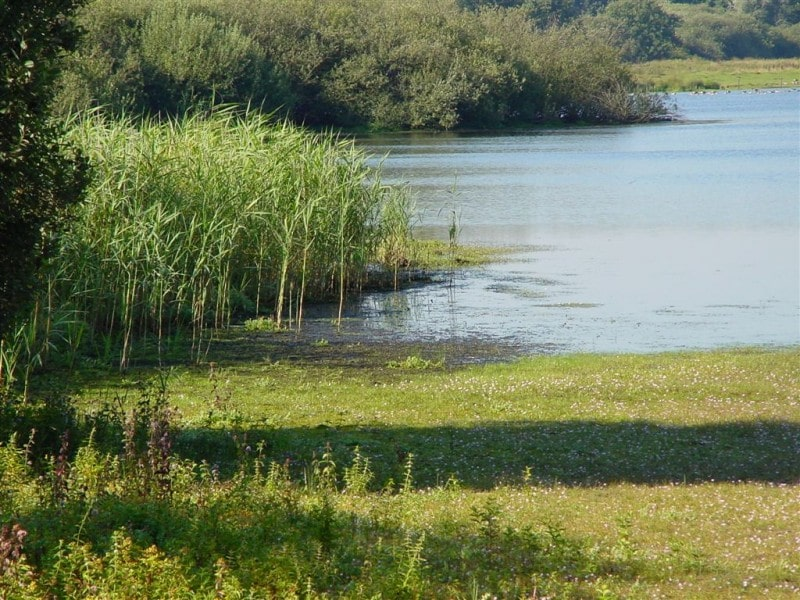
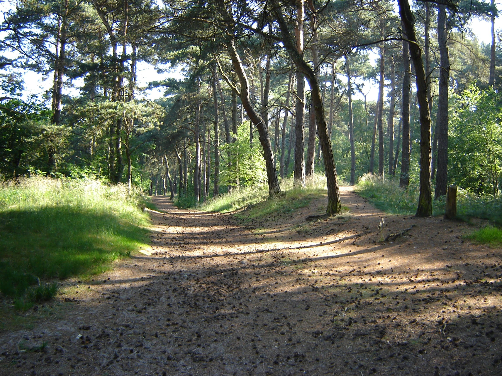

Routes in de buurt
-

Detailse
Green trail
5,3 km | 1,5 uur
Lange wandelroute langs het water.
-

Details
Hike in Limburg
8,3 km | 2 uur
Een mooie wandelroute door de bossen van Brabant
-
 Details
DetailsBorgerpad
8,2 km | 1,8 uur
Korte wandelroute over de loopplanken in Zeeland
-
Details
Bos wandeling
6,9 km | 1,2 uur
Een mooie wandelroute door een klein bos